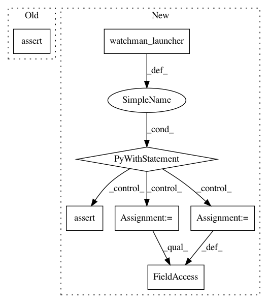

1299ddece5d6cb45adbe5ab797f1a151e8430196,tests/python/pants_test/pantsd/subsystem/test_watchman_launcher.py,TestWatchmanLauncher,test_maybe_launch_already_alive,#TestWatchmanLauncher#,43
Before Change
self.assertTrue(self.watchman_launcher.maybe_launch())
mock_watchman.is_alive.assert_called_once_with()
assert not mock_watchman.launch.called
def test_maybe_launch_error(self):
mock_watchman = self.create_mock_watchman(False)
mock_watchman.launch.side_effect = Watchman.ExecutionError("oops!")
After Change
def test_maybe_launch_already_alive(self):
mock_watchman = self.create_mock_watchman(True)
with self.watchman_launcher() as wl:
wl.watchman = mock_watchman
self.assertTrue(wl.maybe_launch())
mock_watchman.is_alive.assert_called_once_with()
self.assertFalse(mock_watchman.launch.called)
def test_maybe_launch_error(self):
In pattern: SUPERPATTERN
Frequency: 3
Non-data size: 7
Instances
Project Name: pantsbuild/pants
Commit Name: 1299ddece5d6cb45adbe5ab797f1a151e8430196
Time: 2016-03-16
Author: kwilson@twopensource.com
File Name: tests/python/pants_test/pantsd/subsystem/test_watchman_launcher.py
Class Name: TestWatchmanLauncher
Method Name: test_maybe_launch_already_alive
Project Name: pantsbuild/pants
Commit Name: 1299ddece5d6cb45adbe5ab797f1a151e8430196
Time: 2016-03-16
Author: kwilson@twopensource.com
File Name: tests/python/pants_test/pantsd/subsystem/test_watchman_launcher.py
Class Name: TestWatchmanLauncher
Method Name: test_maybe_launch
Project Name: pantsbuild/pants
Commit Name: 1299ddece5d6cb45adbe5ab797f1a151e8430196
Time: 2016-03-16
Author: kwilson@twopensource.com
File Name: tests/python/pants_test/pantsd/subsystem/test_watchman_launcher.py
Class Name: TestWatchmanLauncher
Method Name: test_maybe_launch_error